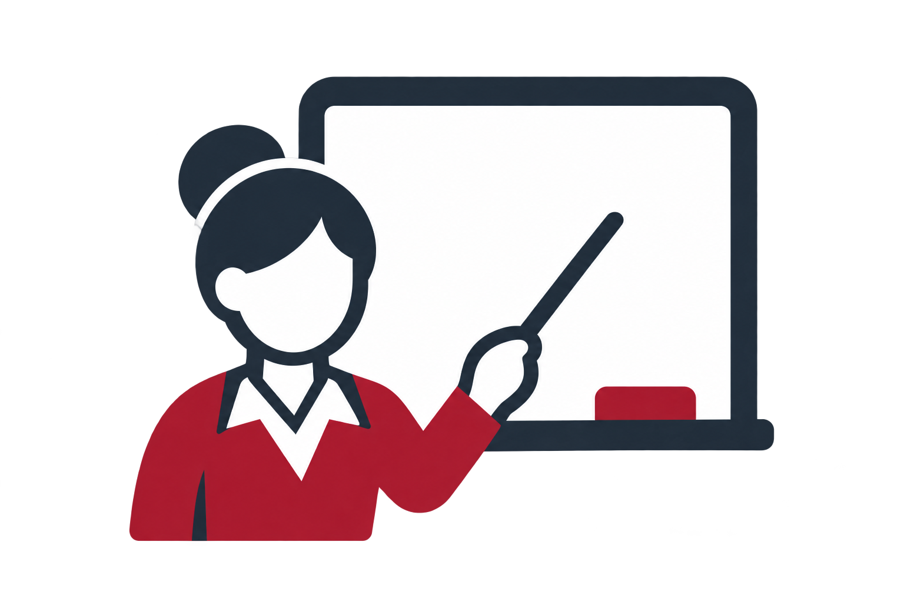
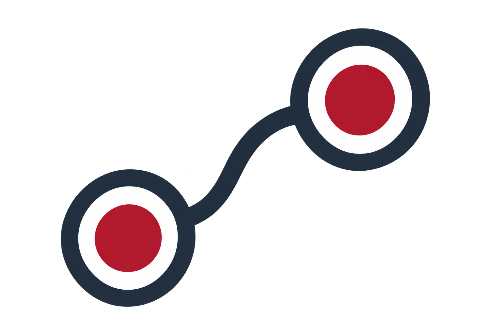
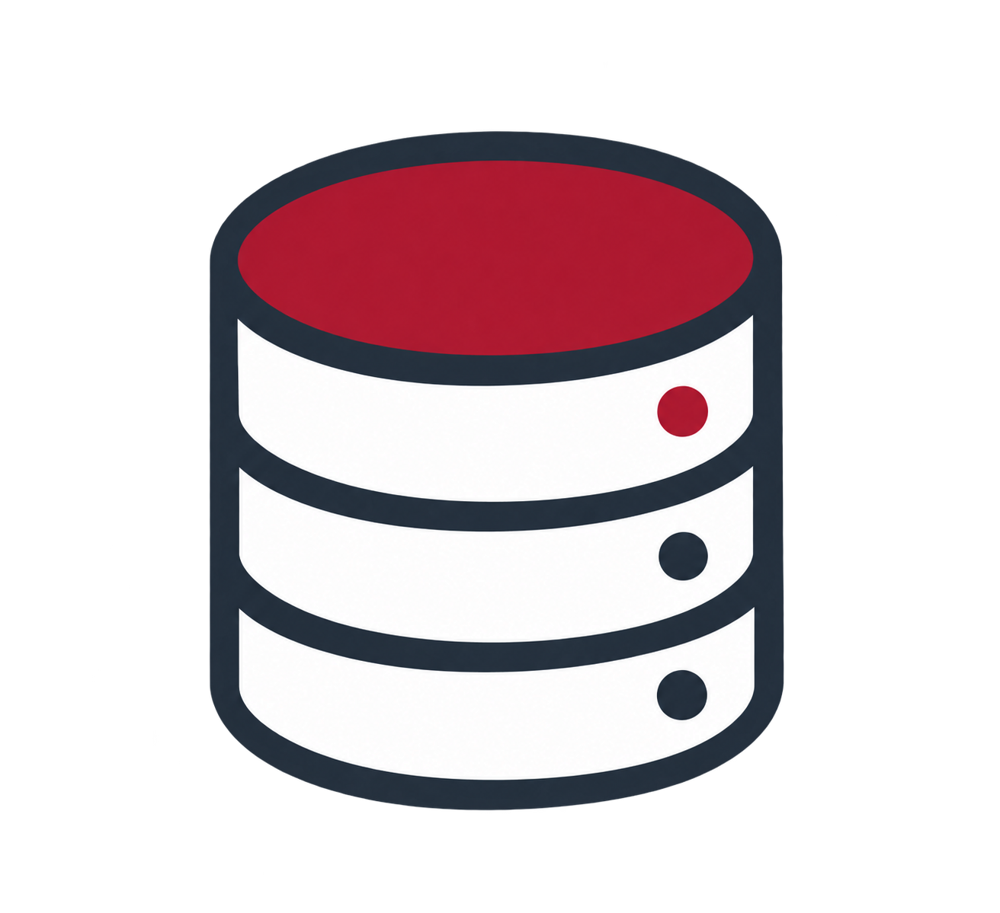
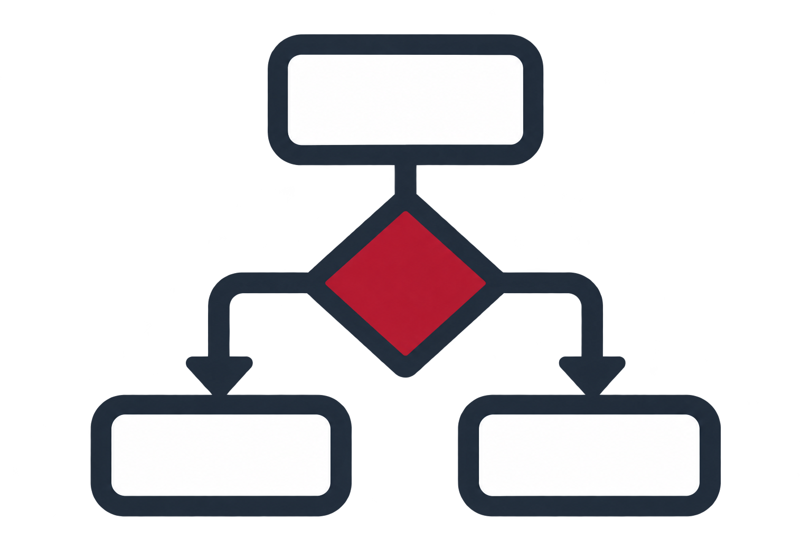

Dato verificado
3EstudiantesModelo intermedioPANEL DE CONTROL / CONOCIMIENTO
Modelo academico
Una vista clara de las entidades, relaciones y reglas logicas generadas a partir del archivo de entrada.
Datos sincronizados con HaskellResumen general
Indicadores del problema procesadoDato verificado
2CursosModelo intermedio
Dato verificado
Dato verificadoEntidades
Modelo intermedio| Nombre | Tipo | Linea |
|---|---|---|
| Ana | Estudiante | 3 |
| Luis | Estudiante | 4 |
| Sofia | Estudiante | 5 |
| Paradigmas | Curso | 6 |
| Bases de Datos | Curso | 7 |
| Maria | Docente | 8 |
| Carlos | Docente | 9 |
Relaciones
Hechos detectados| Origen | Relacion | Destino | Linea |
|---|---|---|---|
| Ana | Lleva | Paradigmas | 12 |
| Luis | Lleva | Paradigmas | 13 |
| Sofia | Lleva | Bases de Datos | 14 |
| Maria | Imparte | Paradigmas | 15 |
| Carlos | Imparte | Bases de Datos | 16 |

Hechos y reglas PrologGenerado automaticamente% ========================================
% PROYECTO III - PARADIGMAS
% BASE DE CONOCIMIENTO GENERADA
% Dominio: Academico
% ========================================
% Permite consultar predicados aun sin hechos declarados.
:- dynamic estudiante/1, curso/1, docente/1, lleva/2, imparte/2.
% ENTIDADES
% linea 3: entidad estudiante
estudiante('Ana').
% linea 4: entidad estudiante
estudiante('Luis').
% linea 5: entidad estudiante
estudiante('Sofia').
% linea 6: entidad curso
curso('Paradigmas').
% linea 7: entidad curso
curso('Bases de Datos').
% linea 8: entidad docente
docente('Maria').
% linea 9: entidad docente
docente('Carlos').
% RELACIONES
% linea 12: relacion lleva
lleva('Ana', 'Paradigmas').
% linea 13: relacion lleva
lleva('Luis', 'Paradigmas').
% linea 14: relacion lleva
lleva('Sofia', 'Bases de Datos').
% linea 15: relacion imparte
imparte('Maria', 'Paradigmas').
% linea 16: relacion imparte
imparte('Carlos', 'Bases de Datos').
% REGLAS
% Dos estudiantes distintos llevan el mismo curso.
companero(X, Y) :-
lleva(X, Curso),
lleva(Y, Curso),
X \= Y.
% Relacion entre un curso y su docente.
curso_con_docente(Curso, Docente) :-
imparte(Docente, Curso).
% Dos estudiantes tienen al menos un docente comun.
comparte_docente(X, Y) :-
lleva(X, Curso1),
lleva(Y, Curso2),
imparte(Docente, Curso1),
imparte(Docente, Curso2),
X \= Y.

Consultas sugeridasGenerado automaticamente% CONSULTAS SUGERIDAS
% Proyecto III - Paradigmas
:- ensure_loaded('conocimiento.pl').
% Consultas generales:
% ?- estudiante(X).
% ?- curso(X).
% ?- docente(X).
% ?- lleva(Estudiante, Curso).
% ?- imparte(Docente, Curso).
% Consultas de reglas solicitadas:
% ?- companero(X, Y).
% ?- curso_con_docente(Curso, Docente).
% ?- comparte_docente(X, Y).
Validacion
ReporteREPORTE DE VALIDACION ===================== Sin errores ni advertencias.